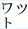
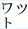

Basic setup
Where it is supported, most of what you need should be achievable by applying the writing-mode property to the content that you want to be set vertically.
In Japanese, Chinese and Korean, lines start at the right side of the figure box and progress to the left. Latin script text typically runs down the page, with the letters rotated clockwise, while the Han characters remain upright. Any graphic also remains upright.

To produce the Japanese example above we would use the following CSS on a block element that contains the text (in this case a div).
div {
writing-mode: vertical-rl;
}
In Mongolian the lines start at the left side of the containing box and progress to the right. The Latin script text still runs down the page, with the letters rotated clockwise, and the Mongolian characters display as expected.
For Mongolian, use:
div {
writing-mode: vertical-lr;
}
If you embed a right-to-left script in the text, such as Arabic or Hebrew, it will run from bottom to top along the line, and the top of the letters will be to the right. This is analogous to what happens in horizontal text.
Other values of writing-mode
In addition to horizontal-tb, which is the normal setting for horizontal text, there are two other property values for writing-mode, which are primarily intended for use with scripts which are normally horizontal but that are being used vertically for captions, table headers, UI elements, and so forth. They may only rarely be useful for vertical Chinese, Japanese, or Korean, and are unlikely to be useful at all for Mongolian.
The value sideways-rl makes all characters to which it is applied lie on their right side, including Han characters. The text runs from top to bottom, and lines progress from right to left.
sideways-rl. Test in your browser: standard syntax • proprietary syntaxThe sideways-lr value makes all characters lie on their left side. Left-to-right text starts at the bottom of the line, and lines progress from left to right.
sideways-lr. Test in your browser: standard syntax • proprietary syntaxThe vertical- values of writing-mode are really intended for use in setting a normal vertical context for CJK or Mongolian text. On the other hand, if your content is in English and you want some title text to run from bottom to top vertically, say on a book spine or in table header, you would use writing-mode:sideways-lr, not one of the vertical- values. (To make Arabic script text run up the page, you'd use sideways-rl.)
 (vertical) vs.  (horizontal). This change requires more than simple rotation, and you will need to use a font that supports the alternative glyphs.
(vertical) vs.  (horizontal). This change requires more than simple rotation, and you will need to use a font that supports the alternative glyphs.